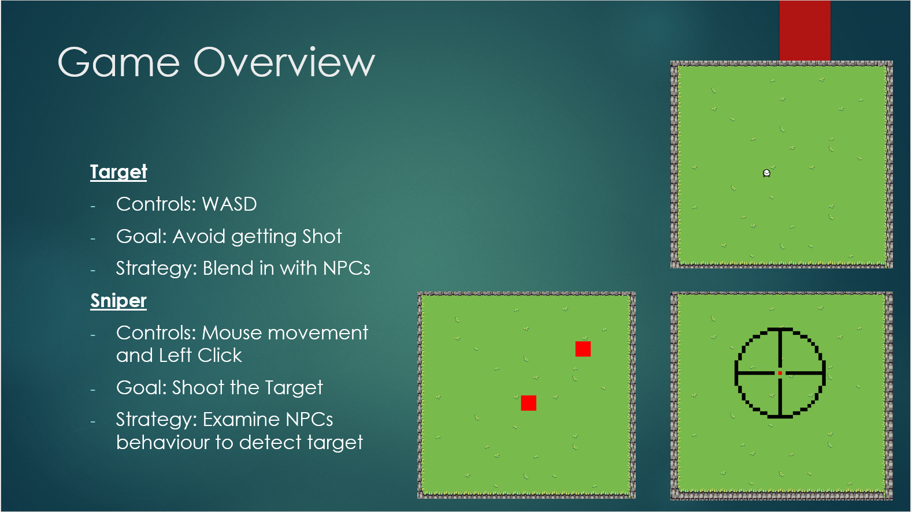
2025 Q4 · Solo University Project
CMP425 Networking Game
A two-player asymmetric networked game prototype where a sniper attempts to identify and eliminate a hidden player who is blending in with NPCs. I built the game solo, excluding the external artwork/assets.
Project overview
This project was created for my university networking module. The game is built around asymmetric information: the sniper can observe the arena from a scoped view, while the target player tries to behave like an NPC and avoid being discovered. To make the interaction more readable for the target, the sniper crosshair is shown on the target client as a transparent overlay.
The technical goal was to create a working real-time networked game loop, not just a local prototype. The project includes separate target, sniper, and server modes, network message handling, server-side validation, snapshot updates, smoothing, and testing under simulated latency and packet-loss conditions.
What I implemented
- Asymmetric multiplayer design: built a target-vs-sniper concept where the target blends with NPCs and the sniper must identify the real player through movement and behaviour.
- Client-server networking: separated the game into server, sniper client, and target client modes, with the server acting as the authority for validation and state distribution.
- UDP transport layer: used non-blocking UDP sockets so the game loop could continue updating and rendering without freezing while waiting for packets.
- Application-level protocol: implemented message types for player updates, server snapshots, NPC snapshots, and shot events.
- Authoritative validation: handled sniper shot events through the server rather than trusting the client, reducing the risk of inconsistent or unfair results.
- Latency mitigation: added snapshot buffering, interpolation, dead reckoning, and exponential smoothing to reduce visible jitter and snapping.
- Network testing: tested behaviour under 50ms, 100ms, and 200ms simulated delay, as well as packet drops, out-of-order packets, and bandwidth limits.
Technical focus
The strongest technical part of the project was building a complete networked gameplay loop where rendering, simulation, and networking could run together. The server produced authoritative snapshots, while the clients consumed those snapshots and smoothed the visual result to hide network delay where possible.
The project also exposed the trade-offs involved in real-time game networking. UDP kept the game responsive, but reliability-sensitive events such as sniper shots became vulnerable to packet loss. My later analysis identified practical improvements such as incremental shot IDs, acknowledgements, server tick IDs, time synchronisation, and reducing the number of NPC snapshots sent over the network.
Video demonstration
This section is ready for an embedded demonstration video. Once the video is uploaded to YouTube, replace the placeholder below with the YouTube embed iframe.
Gallery
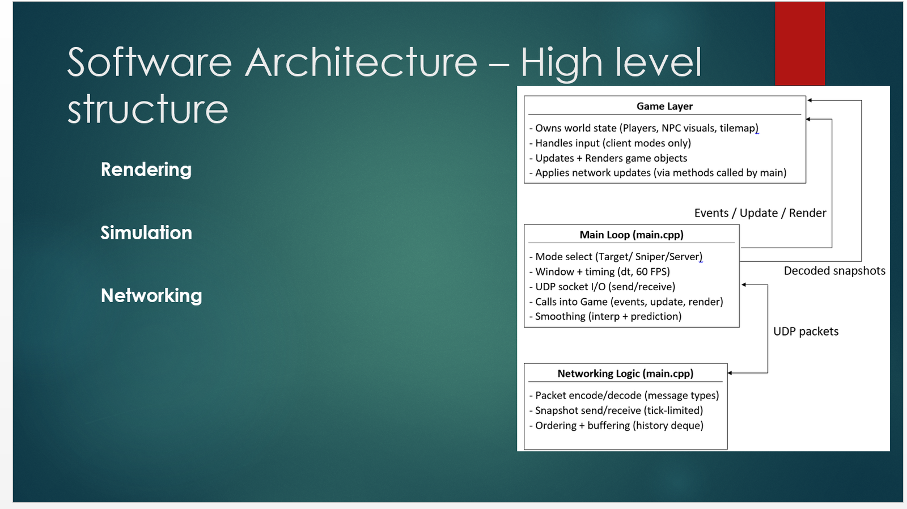
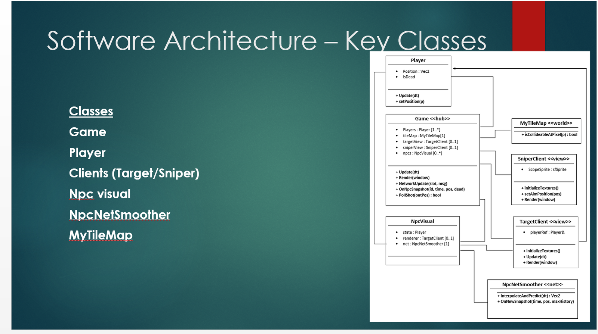
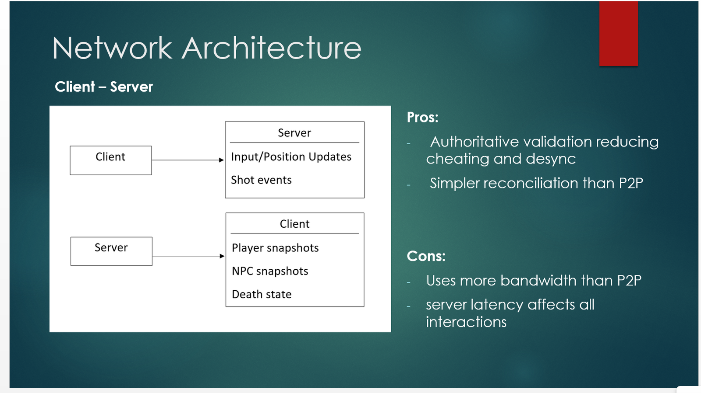
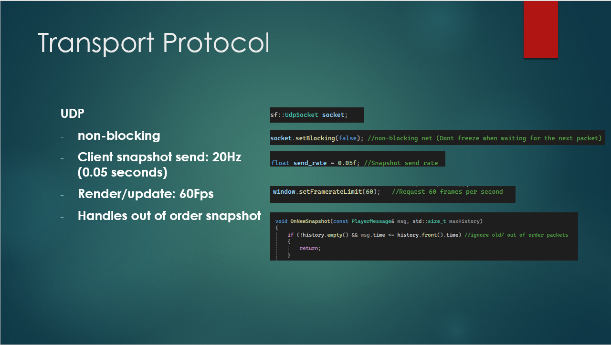
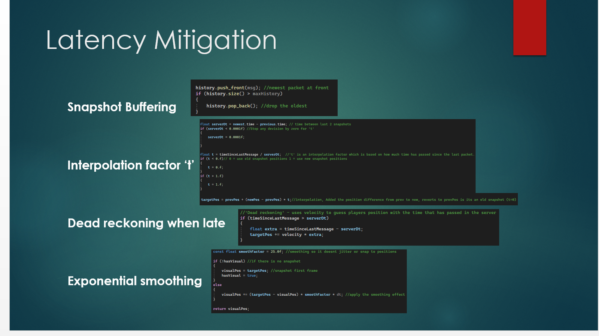
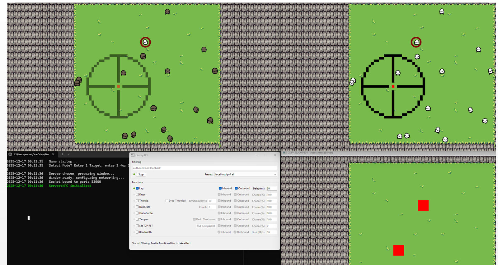
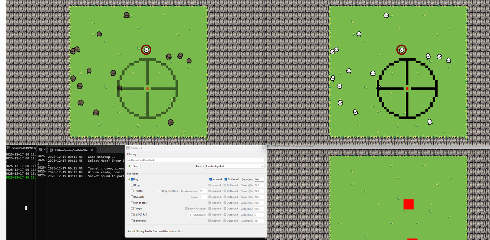
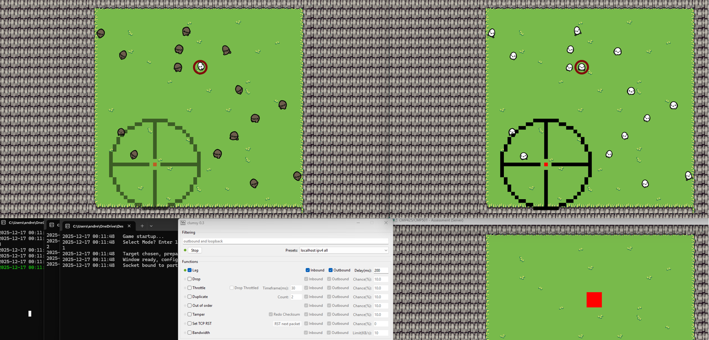
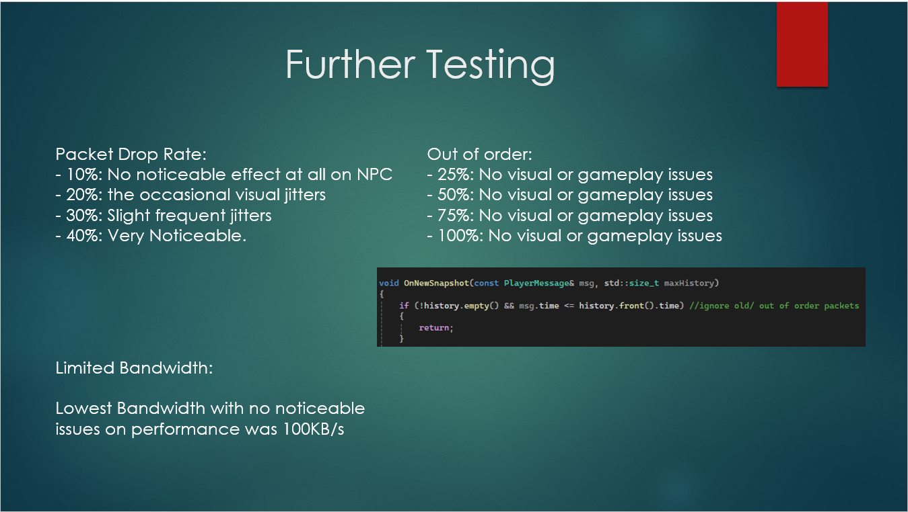
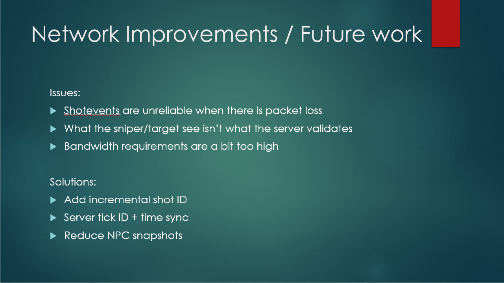